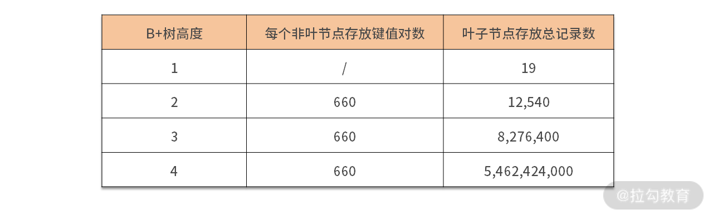

- 00 开篇词 从业务出发，开启海量 MySQL 架构设计.md.html
- 01 数字类型：避免自增踩坑.md.html
- 02 字符串类型：不能忽略的 COLLATION.md.html
- 03 日期类型：TIMESTAMP 可能是巨坑.md.html
- 04 非结构存储：用好 JSON 这张牌.md.html
- 05 表结构设计：忘记范式准则.md.html
- 06 表压缩：不仅仅是空间压缩.md.html
- 07 表的访问设计：你该选择 SQL 还是 NoSQL？.md.html
- 08 索引：排序的艺术.md.html
- 09 索引组织表：万物皆索引.md.html
- 10 组合索引：用好，性能提升 10 倍！.md.html
- 11 索引出错：请理解 CBO 的工作原理.md.html
- 12 JOIN 连接：到底能不能写 JOIN？.md.html
- 13 子查询：放心地使用子查询功能吧！.md.html
- 14 分区表：哪些场景我不建议用分区表？.md.html
- 15 MySQL 复制：最简单也最容易配置出错.md.html
- 16 读写分离设计：复制延迟？其实是你用错了.md.html
- 17 高可用设计：你怎么活用三大架构方案？.md.html
- 18 金融级高可用架构：必不可少的数据核对.md.html
- 19 高可用套件：选择这么多，你该如何选？.md.html
- 20 InnoDB Cluster：改变历史的新产品.md.html
- 21 数据库备份：备份文件也要检查！.md.html
- 22 分布式数据库架构：彻底理解什么叫分布式数据库.md.html
- 23 分布式数据库表结构设计：如何正确地将数据分片？.md.html
- 24 分布式数据库索引设计：二级索引、全局索引的最佳设计实践.md.html
- 25 分布式数据库架构选型：分库分表 or 中间件 ？.md.html
- 26 分布式设计之禅：全链路的条带化设计.md.html
- 27 分布式事务：我们到底要不要使用 2PC？.md.html
14 分区表：哪些场景我不建议用分区表？
前面几讲，我们通过索引的原理，索引覆盖的使用，结合复杂 SQL 的调优，学习了索引设计的各个方面。那么在模块二的最后一讲，我想来谈谈分区表的设计，用来对数据进行物理分区。
分区表即涉及表结构设计，也涉及了索引的设计，以及一个数据库上的哲学问题：是否要使用分区表？
接下来，我们就来学习分区表的相关知识（分区表的使用、注意事项、误区）以及在业务上的设计。
分区表的使用
简单来说，分区表就是把物理表结构相同的几张表，通过一定算法，组成一张逻辑大表。这种算法叫“分区函数”，当前 MySQL 数据库支持的分区函数类型有 RANGE、LIST、HASH、KEY、COLUMNS。
无论选择哪种分区函数，都要指定相关列成为分区算法的输入条件，这些列就叫“分区列”。另外，在 MySQL 分区表中，主键也必须是分区列的一部分，不然创建分区表时会失败，比如：
CREATE TABLE t (
a INT,
b INT,
c DATETIME(6),
d VARCHAR(32),
e INT,
PRIMARY KEY (a,b)
)
partition by range columns(c) (
PARTITION p0000 VALUES LESS THAN ('2019-01-01'),
PARTITION p2019 VALUES LESS THAN ('2020-01-01'),
PARTITION p2020 VALUES LESS THAN ('2021-01-01'),
PARTITION p9999 VALUES LESS THAN (MAXVALUE)
);
ERROR 1503 (HY000): A PRIMARY KEY must include all columns in the table's partitioning function (prefixed columns are not considered).
上面创建了表 t，主键是复合索引，由列 a、b 组成。表 t 创建分区表的意图是根据列 c（时间列）拆分数据，把不同时间数据存放到不同分区中。
而我们可以从错误的提示中看到：分区表的主键一定要包含分区函数的列。所以，要创建基于列c 的数据分片的分区表，主键必须包含列 c，比如下面的建表语句：
CREATE TABLE t (
a INT,
b INT,
c DATETIME,
d VARCHAR(32),
e INT,
PRIMARY KEY (a,b,c),
KEY idx_e (e)
)
partition by range columns(c) (
PARTITION p0000 VALUES LESS THAN ('2019-01-01'),
PARTITION p2019 VALUES LESS THAN ('2020-01-01'),
PARTITION p2020 VALUES LESS THAN ('2021-01-01'),
PARTITION p9999 VALUES LESS THAN (MAXVALUE)
);
创建完表后，在物理存储上会看到四个分区所对应 ibd 文件，也就是把数据根据时间列 c 存储到对应的 4 个文件中：
t#p#p0000.ibd t#p#p2019.ibd t#p#p2020.ibd t#p#p9999.ibd
所以，你要理解的是：MySQL 中的分区表是把一张大表拆成了多张表，每张表有自己的索引，从逻辑上看是一张表，但物理上存储在不同文件中。
另外，对于唯一索引的实现，可能和你原本的理解有些不同，我们接着往下看。
分区表注意事项：唯一索引
在 MySQL 数据库中，分区表的索引都是局部，而非全局。也就是说，索引在每个分区文件中都是独立的，所以分区表上的唯一索引必须包含分区列信息，否则创建会报错，比如：
ALTER TABLE t ADD UNIQUE KEY idx_d(d);
ERROR 1503 (HY000): A UNIQUE INDEX must include all columns in the table's partitioning function (prefixed columns are not considered).
你可以看到错误提示： 唯一索引必须包含分区函数中所有列。而下面的创建才能成功：
ALTER TABLE t ADD UNIQUE KEY idx_d(d,c);
但是，正因为唯一索引包含了分区列，唯一索引也就变成仅在当前分区唯一，而不是全局唯一了。那么对于上面的表 t，插入下面这两条记录都是可以的：
INSERT INTO t VALUES
(1,1,'2021-01-01','aaa',1),
(1,1,'2020-01-01','aaa',1);
SELECT * FROM t;
+---+---+---------------------+------+------+
| a | b | c | d | e |
+---+---+---------------------+------+------+
| 1 | 1 | 2020-01-01 00:00:00 |aaa | 1 |
| 1 | 1 | 2021-01-01 00:00:00 |aaa | 1 |
+---+---+---------------------+------+------+
你可以看到，列 d 都是字符串‘aaa’，但依然可以插入。这样带来的影响是列 d 并不是唯一的，所以你要由当前分区唯一实现全局唯一。
那如何实现全局唯一索引呢？ 和之前表结构设计时一样，唯一索引使用全局唯一的字符串（如类似 UUID 的实现），这样就能避免局部唯一的问题。
分区表的误区：性能提升
很多同学会认为，分区表是把一张大表拆分成了多张小表，所以这样 MySQL 数据库的性能会有大幅提升。这是错误的认识！如果你寄希望于通过分区表提升性能，那么我不建议你使用分区，因为做不到。
分区表技术不是用于提升 MySQL 数据库的性能，而是方便数据的管理。
我们再回顾下 08 讲中提及的“B+树高度与数据存储量之间的关系”：

从表格中可以看到，B+ 树的高度为 4 能存放数十亿的数据，一次查询只需要占用 4 次 I/O，速度非常快。
但是当你使用分区之后，效果就不一样了，比如上面的表 t，我们根据时间拆成每年一张表，这时，虽然 B+ 树的高度从 4 降为了 3，但是这个提升微乎其微。
除此之外，分区表还会引入新的性能问题，比如非分区列的查询。非分区列的查询，即使分区列上已经创建了索引，但因为索引是每个分区文件对应的本地索引，所以要查询每个分区。
接着，我们看一下这条 SQL 以及它的执行计划：
SELECT * FROM t WHERE d = 'aaa'
******** 1. row ********
id: 1
select_type: SIMPLE
table: t
partitions: p0000,p2019,p2020,p9999
type: ALL
possible_keys: NULL
key: NULL
key_len: NULL
ref: NULL
rows: 2
filtered: 50.00
Extra: Using where
通过执行计划我们可以看到：上述 SQL 需要访问 4 个分区，假设每个分区需要 3 次 I/O，则这条 SQL 总共要 12 次 I/O。但是，如果使用普通表，记录数再多，也就 4 次的 I/O 的时间。
所以，分区表设计时，务必明白你的查询条件都带有分区字段，否则会扫描所有分区的数据或索引。所以，分区表设计不解决性能问题，更多的是解决数据迁移和备份的问题。
而为了让你更好理解分区表的使用，我们继续看一个真实业务的分区表设计。
分区表在业务上的设计
以电商中的订单表 Orders 为例，如果在类似淘宝的海量互联网业务中，Orders 表的数据量会非常巨大，假设一天产生 5000 万的订单，那么一年表 Orders 就有近 180 亿的记录。
所以对于订单表，在数据库中通常只保存最近一年甚至更短时间的数据，而历史订单数据会入历史库。除非存在 1 年以上退款的订单，大部分订单一旦完成，这些数据从业务角度就没用了。
那么如果你想方便管理订单表中的数据，可以对表 Orders 按年创建分区表，如：
CREATE TABLE `orders` (
`o_orderkey` int NOT NULL,
`O_CUSTKEY` int NOT NULL,
`O_ORDERSTATUS` char(1) CHARACTER SET utf8mb4 COLLATE utf8mb4_general_ci NOT NULL,
`O_TOTALPRICE` decimal(15,2) NOT NULL,
`O_ORDERDATE` date NOT NULL,
`O_ORDERPRIORITY` char(15) CHARACTER SET utf8mb4 COLLATE utf8mb4_general_ci NOT NULL,
`O_CLERK` char(15) CHARACTER SET utf8mb4 COLLATE utf8mb4_general_ci NOT NULL,
`O_SHIPPRIORITY` int NOT NULL,
`O_COMMENT` varchar(79) CHARACTER SET utf8mb4 COLLATE utf8mb4_general_ci NOT NULL,
PRIMARY KEY (`o_orderkey`,`O_ORDERDATE`),
KEY `orders_fk1` (`O_CUSTKEY`),
KEY `idx_orderdate` (`O_ORDERDATE`)
)
PARTITION BY RANGE COLUMNS(o_orderdate)
(
PARTITION p0000 VALUES LESS THAN ('1992-01-01') ENGINE = InnoDB,
PARTITION p1992 VALUES LESS THAN ('1993-01-01') ENGINE = InnoDB,
PARTITION p1993 VALUES LESS THAN ('1994-01-01') ENGINE = InnoDB,
PARTITION p1994 VALUES LESS THAN ('1995-01-01') ENGINE = InnoDB,
PARTITION p1995 VALUES LESS THAN ('1996-01-01') ENGINE = InnoDB,
PARTITION p1996 VALUES LESS THAN ('1997-01-01') ENGINE = InnoDB,
PARTITION p1997 VALUES LESS THAN ('1998-01-01') ENGINE = InnoDB,
PARTITION p1998 VALUES LESS THAN ('1999-01-01') ENGINE = InnoDB,
PARTITION p9999 VALUES LESS THAN (MAXVALUE)
）
你可以看到，这时 Orders 表的主键修改为了(o_orderkey,O_ORDERDATE)，数据按照年进行分区存储。那么如果要删除 1 年前的数据，比如删除 1998 年的数据，之前需要使用下面的 SQL，比如:
DELETE FROM Orders
WHERE o_orderdate >= '1998-01-01'
AND o_orderdate < '1999-01-01'
可这条 SQL 的执行相当慢，产生大量二进制日志，在生产系统上，也会导致数据库主从延迟的问题。而使用分区表的话，对于数据的管理就容易多了，你直接使用清空分区的命令就行：
ALTER TABLE orders_par
TRUNCATE PARTITION p1998
上述 SQL 执行速度非常快，因为实际执行过程是把分区文件删除和重建。另外产生的日志也只有一条 DDL 日志，也不会导致主从复制延迟问题。
# at 425
#210328 12:10:12 server id 8888 end_log_pos 549 Query thread_id=9 exec_time=0 error_code=0 Xid = 10
SET TIMESTAMP=1619583012/*!*/;
/*!80013 SET @@session.sql_require_primary_key=0*//*!*/;
ALTER TABLE orders TRUNCATE PARTITION p1998
/*!*/;
总结
这一讲我们学习了分区表的原理、使用，最后通过线上电商表 Orders 展示了如何用好分区表。当然真正的电商业务会做分布式架构，从而用到分表技术，这些内容我们在后面会详细讲。
我强调一下今天的重点：
- 当前 MySQL 的分区表支持 RANGE、LIST、HASH、KEY、COLUMNS 的分区算法；
- 分区表的创建需要主键包含分区列；
- 在分区表中唯一索引仅在当前分区文件唯一，而不是全局唯一；
- 分区表唯一索引推荐使用类似 UUID 的全局唯一实现；
- 分区表不解决性能问题，如果使用非分区列查询，性能反而会更差；
- 推荐分区表用于数据管理、速度快、日志小。
我想再次提醒你：分区表并不是用于提升性能的一种手段，它是方便管理数据的一种方式。